Tidal current energy · astronomical forcing & spring–neap · the shallow-water link · the cubic law.
2 · Why open geospatial
What proprietary tooling costs the ocean-energy sector — and why FOSS4G changes the calculus.
3 · The platform, in three phases
Phase 1 — foundational analysis & spatial modelling (open data → C-grid) Phase 2 — advanced analytics & decision support (solver → hotspots → turbines) Phase 3 — visualization & democratization (Flask + MapLibre in the browser)
4 · One platform, end-to-end FOSS4G
The full stack from open data to stakeholders, with transparency & reproducibility as engineering policy.
5 · Limits & the road ahead
Honest about the gaps: TELEMAC-2D refinement, real-time forecasting, economic & multi-criteria modules.
6 · The takeaway
Open geospatial software is the enabling layer for ocean renewable energy.
physics→problem→platform→stack→limits→takeaway
Start with the resource
What is tidal current energy?
Moving seawater is the resource
Tidal currents are the horizontal movement of seawater caused by periodic changes in sea level. A tidal-stream turbine harvests the kinetic energy of the flow.
Different from a tidal barrage
A barrage or lagoon stores water behind a structure. A tidal-stream device sits in the moving water and extracts energy without impounding the basin.
Why it is attractive
The astronomical driver is predictable. That makes current direction, timing and resource envelopes easier to forecast than weather-driven resources.
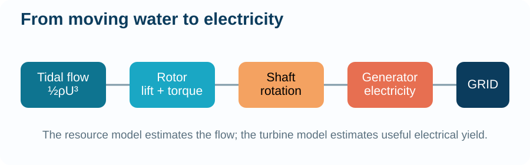
A tidal-stream device harvests flow in place: no dam, reservoir or fuel.
Predictableastronomical forcing
Densewater is ~800× denser than air
Localchannels near coastal demand
Why the water moves
Tides begin as astronomical forcing
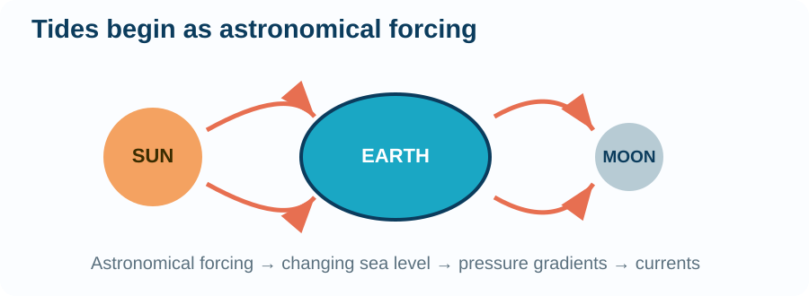
Moon + Sun → changing water level
Gravitational forcing raises and lowers the ocean surface. The basin-scale wave propagates as a shallow-water wave.
Constituents are the building blocks
M₂ is the principal lunar semi-diurnal tide at 12.42 hours. S₂, K₁ and O₁ add solar and diurnal components.
η(t) = Σ Ak cos(ωkt + φk)
The platform reconstructs boundary elevation from harmonic amplitudes and phases rather than treating the tide as a black-box input.
Predictability has a rhythm
M₂ and S₂ beat into the spring–neap cycle
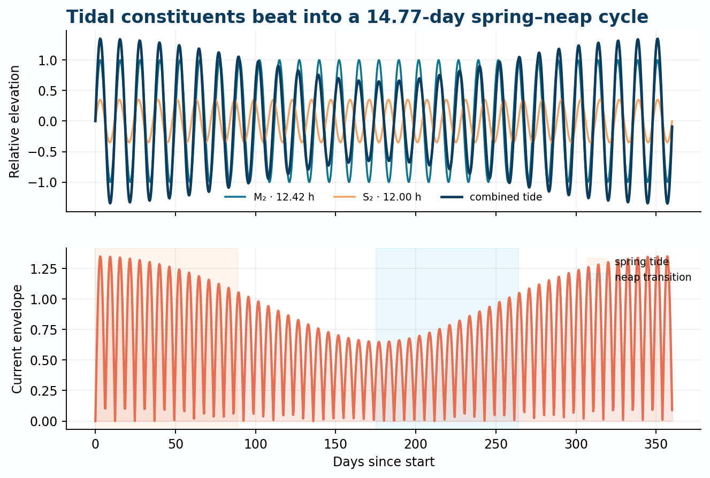
Spring tide
M₂ and S₂ are in phase. Tidal range and current speeds are highest.
Neap tide
The constituents move out of phase. The current envelope contracts.
Why run for 15 days?
The 14.77-day synodic cycle is the minimum window that captures both extremes. A shorter simulation can overstate or understate annual yield.
12.42 hM₂ lunar period
14.77 dspring–neap envelope
15 dminimum screening run
The hydrodynamic link
How does a surface slope become a current?
1 · Pressure gradient
Water accelerates from high free surface to low free surface: −g∇η.
2 · Continuity
If water converges into a cell, the surface rises. Mass conservation links elevation change to flux.
3 · Momentum balance
Acceleration is opposed by bottom friction, with Coriolis and advection becoming important at larger scales and in constrictions.
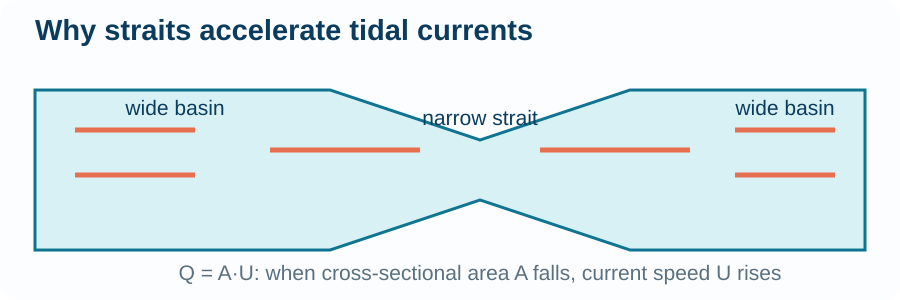
A phase difference between basins drives flow; geometry controls its speed.
∂u/∂t = −g∂η/∂x − Cd|u|u/h + ...
The shallow-water equations are the bridge between an elevation boundary condition and a velocity field that a turbine can use.
The device
How moving water becomes useful electricity
Hydrodynamic rotor
Blade lift creates torque as water passes through the swept area.
Power take-off
A shaft and generator convert mechanical rotation into electrical power.
Real-world losses
Electrical, mechanical and array losses mean useful output is below the theoretical resource.
The platform separates theoretical resource density from turbine-specific output, capacity factor and AEP.
The defining equation
Power density scales with the cube of current speed
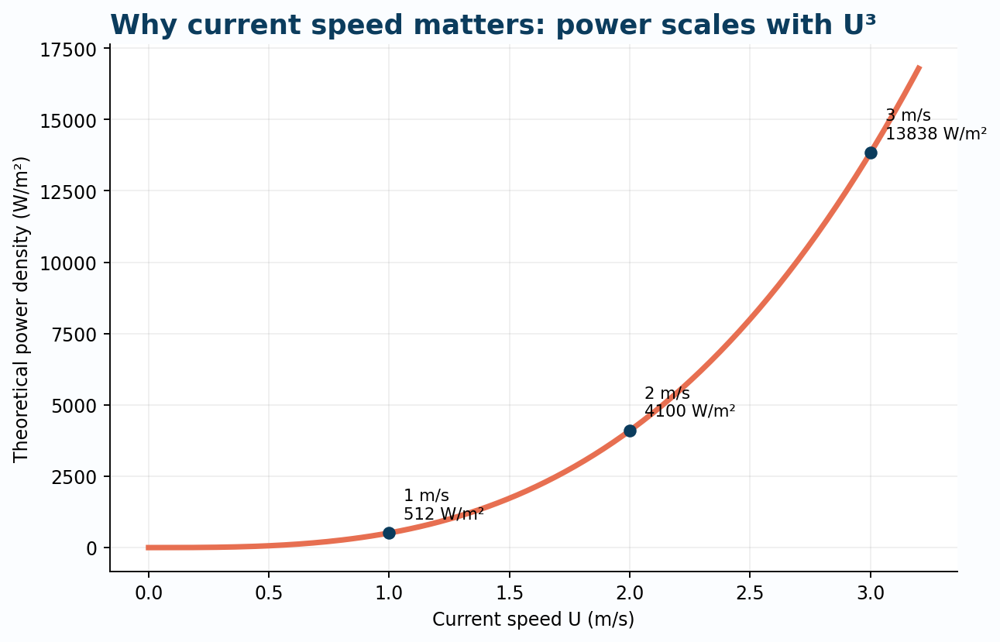
P = ½ρU³
Where the cubic term comes from
Energy density is ½ρU². The flow transports that energy at speed U. Multiply them and the result is ½ρU³.
Speed is disproportionately valuable
At 2 m/s, the theoretical density is about 4,100 W/m². At 1 m/s it is only about 512 W/m².
Why modelling quality matters
A modest velocity error becomes a much larger power error. Site screening must resolve the current field, not just the tidal range.
Geography becomes physics
Why channels and straits become hotspots
Mass conservation
Q = A·U. As the cross-sectional area narrows, velocity rises to carry the same volume flux.
Depth and drag
Deeper channels reduce friction per unit mass. Rough shallow beds dissipate more energy.
Philippine advantage
An archipelago offers many inter-island constrictions where tidal phase differences can create fast, repeatable currents.
Read the map with the mechanism
The funnel diagram explains why the fastest cells cluster in narrow passages rather than across open shelves.
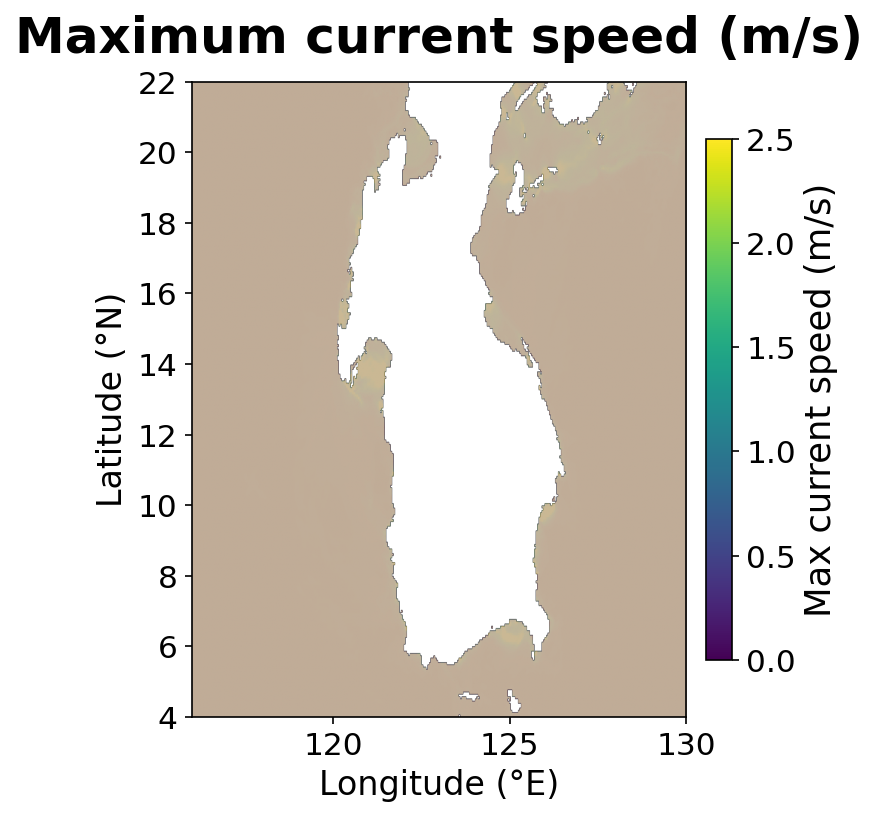
The subject area
The Philippines: an archipelago built for ocean energy
7,641 islands, 36,289 km of coastline
One of the world's great archipelagos, ringed by deep ocean basins — the Pacific, South China, Sulu and Celebes seas.
Island constrictions accelerate the tide
Hundreds of inter-island straits and passages squeeze the same volume flux through narrow cross-sections: Q = A·U, so the currents speed up.
Phase differences drive the flow
Basins on either side of a passage are forced out of phase, so water must surge through the gaps — fast, predictable, repeatable currents.
The fast cells cluster exactly where the islands pinch the flow.
7,641islands in the archipelago
36,289 kmcoastline — energy close to demand
Hundredsof inter-island straits & passages
NAMRIA: 7,641 islands · ~36,289 km coastline
Why we are here
The horizon: a blue economy on a net-zero clock
1.2 MWDragon 12 tidal kite commissioned in 2024
4.5 MWUldolmok open-sea tidal test site
2 MWEuropean WaveRoller farm in development
Ocean Renewable Energy (ORE) is a real, emerging resource
More predictable and consistent than wave energy — driven by deterministic astronomical forcing, not weather.
The sector is moving
2024 highlights (IEA-OES Annual Report): Minesto's 1.2 MW Dragon 12 tidal kite grid-connected in the Faroe Islands; a new 4.5 MW open-sea tidal test site at Uldolmok, Korea; a first wave-energy farm (2 MW, 4×WaveRoller) kicking off in Europe.
But site selection decides everything
Deploying a turbine in a strait that turns out to have weak currents is ruinous. Resource assessment must be quantitative, auditable and repeatable before any capital commitment.
Why FOSS4G
The ocean-energy community is global and mixed-resource. Open geospatial software lets small organisations do serious marine spatial planning.
The platform turns a global transition into a spatial question: where can energy, access and coexistence align?
RESOURCE→CONSTRAINTS→SUITABILITY→INVESTMENT
IEA-OES, An Overview of Ocean Energy Activities in 2024
The case for open
Proprietary geospatial tooling holds ORE development back
1 · High licence costs
Offshore energy platforms are already capital-heavy; per-seat GIS licences hit exactly the university labs, startups and agencies that do early-stage resource screening.
2 · Opaque, "black-box" algorithms
When a suitability map is produced by closed code, an environmental regulator cannot verify why a site was scored the way it was.
3 · Licensing lock-in
Results, skills and pipelines become trapped in a vendor ecosystem, making independent review and collaboration harder.
The FOSS4G alternative
Community-driven tools make site-selection workflows reproducible, verifiable and free from black-box constraints — and portable across projects and countries.
Closed workflow
Licence fees
Opaque processing
Vendor lock-in
Hard to reproduce
FOSS4G workflow
Open data + open code
Inspectable formulas
Interoperable outputs
Repeatable by design
"Choosing open geospatial frameworks is more than a cost-saving measure — it is a commitment to the democratization of technology."
— session abstract
Our running example
The Philippines: a natural tidal-energy laboratory
An archipelago built for tidal current energy
Surrounded by vast ocean, the country's channels and straits constrict flow, accelerating currents to exactly the regimes that make tidal in-stream energy conversion (TISEC) attractive.
A decade of open-source lineage
PhilSHORE (Ang et al.) — "Philippine Sites for Harnessing Ocean Renewable Energy" — a webGIS marine-spatial-planning tool for tidal current resource assessment & site suitability, built on Django, GeoServer, GDAL, Leaflet and D3.js.
Now: tidal-oss — a fully open re-implementation
Two-phase workflow: a fast 2D shallow-water screening model (Python/NumPy) feeding a Flask + MapLibre GL JS web map.
Maximum current speed from the screening model — the straits glow with fast, energetic flow.
M.R.C.O. Ang et al., WASET IJMES 9(5) 2015; ISPRS Ann. III-8 (2016)
Phase 1
Foundational analysis & spatial modelling
Assembling the marine environment from open data
Bathymetry
GEBCO global gridded elevation (NetCDF) — the shape of the seafloor.
Coastline & boundaries
OpenStreetMap coastline and GADM administrative boundaries (Shapefile) for the land mask.
Tidal forcing
GOT4.10c / FES2014 / TPXO9 harmonic constituents — or a synthetic M2 tide for testing.
A transparent data path from observation to model input
Every input is a published, citable, machine-readable dataset — the analysis can be re-run by anyone, anywhere.
No black boxes
Data provenance from source file → grid cell is fully auditable.
Phase 1 · spatial modelling
From raw data to a computable ocean
Build a structured Arakawa C-grid (~2 km)
Elevation is regridded onto a uniform lon/lat grid; the land mask is carved from GADM; wet cells are marked.
Reconstruct the tide at the boundary
η(t) = Σk Ak·cos(ωkt + φk)
Harmonic constituents M2, S2, K1, O1 are evaluated at open-boundary cells as a time series.
Ready to solve
Depths positive-down, wet/dry perimeter detection, and a CFL-safety-checked time step — the domain is now a numerical experiment, not a picture.
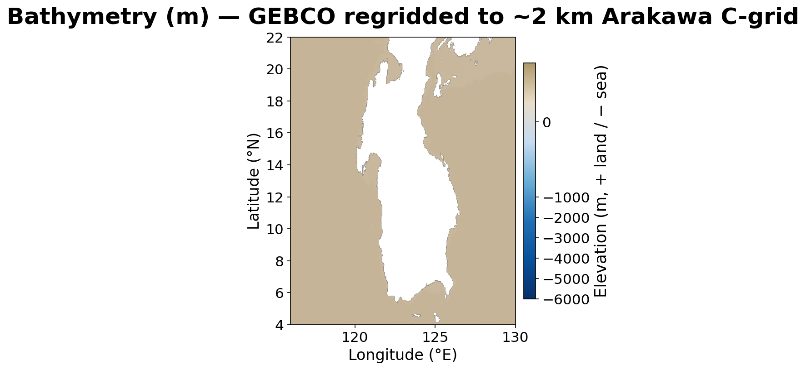
Bathymetry and land mask
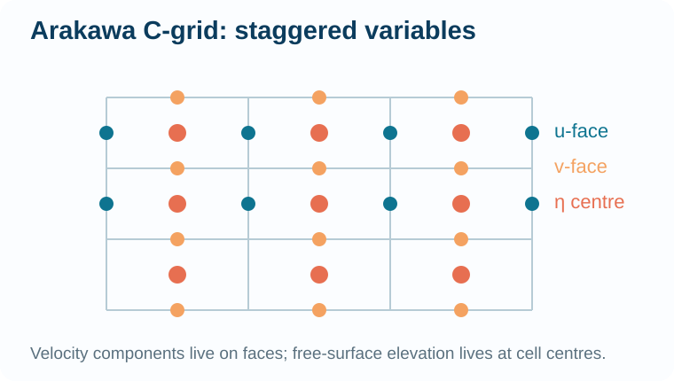
Staggered C-grid variables
The physical ocean becomes a structured, computable domain.
tidal-oss · src/model/grid.py · forcing.py
Phase 2
Advanced analytics & decision support
Turning raw ocean data into actionable insight
2D depth-averaged shallow-water equations on the C-grid
Forward–backward time stepping with semi-implicit bottom friction, optional Coriolis, advection and horizontal viscosity — a ~5× speed-up via a numba-JIT fused kernel.
Spring–neap realism
A 15-day run spans at least one full M2+S2 modulation cycle.
Numerical safety
Auto time step from the CFL condition — stability enforced, not hoped for.
The physics in one line
P = ½ · ρ · |U|³
Time-mean kinetic power density — the platform's core metric.
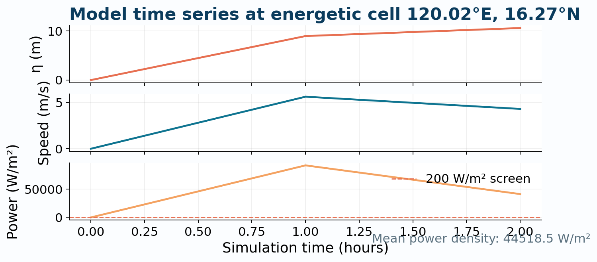
One simulation, three linked signals: elevation → velocity → power.
Phase 2 · decision support
Hotspot screening: where is the resource worth harvesting?
Time-mean power density over the cycle
Every wet cell is scored with P = ½ρ|U|³, averaged in time.
Hotspots = cells with mean P ≥ 200 W/m²
The screening pass exported 3,412 hotspot features — concentrated in the energetic straits.
Open, interoperable outputs
results.nc time series · tidal_power_density.tif Cloud-Optimised GeoTIFF · hotspots.geojson ranked sites
From screening to refinement
Top hotspots are queued for high-resolution TELEMAC-2D modelling — a fast, coarse model finds the candidate; an industry-grade model confirms it.
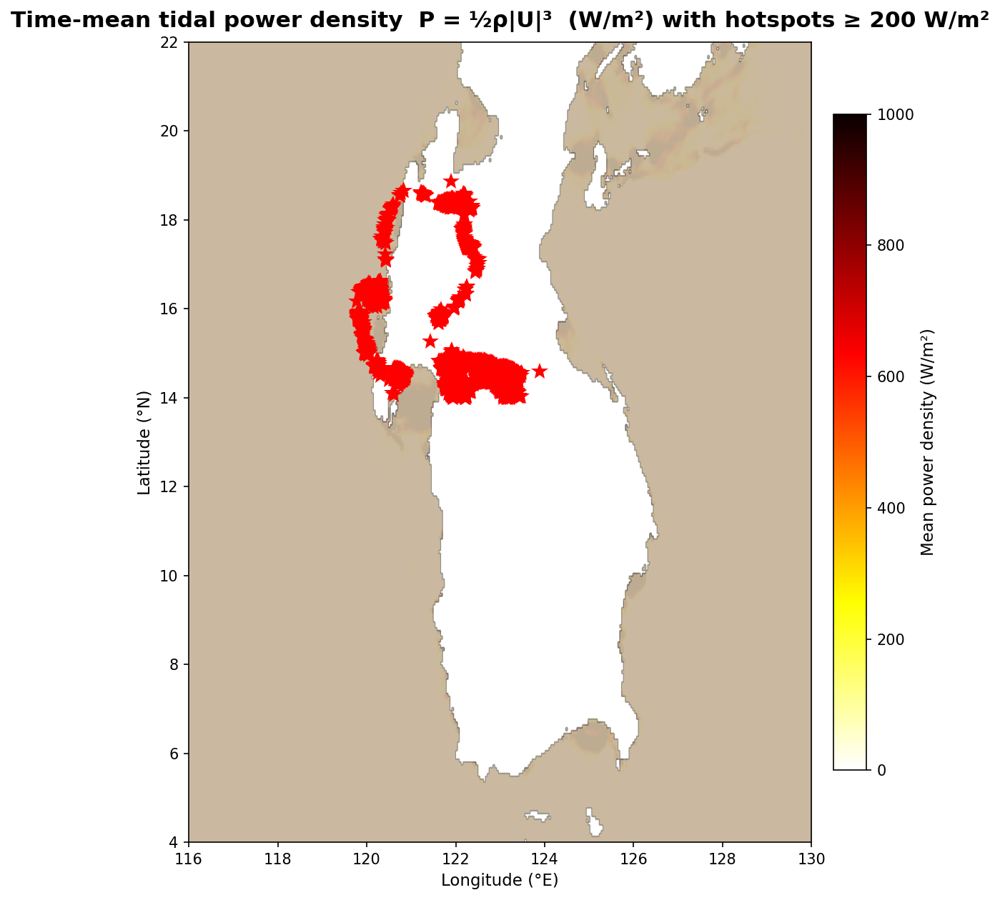
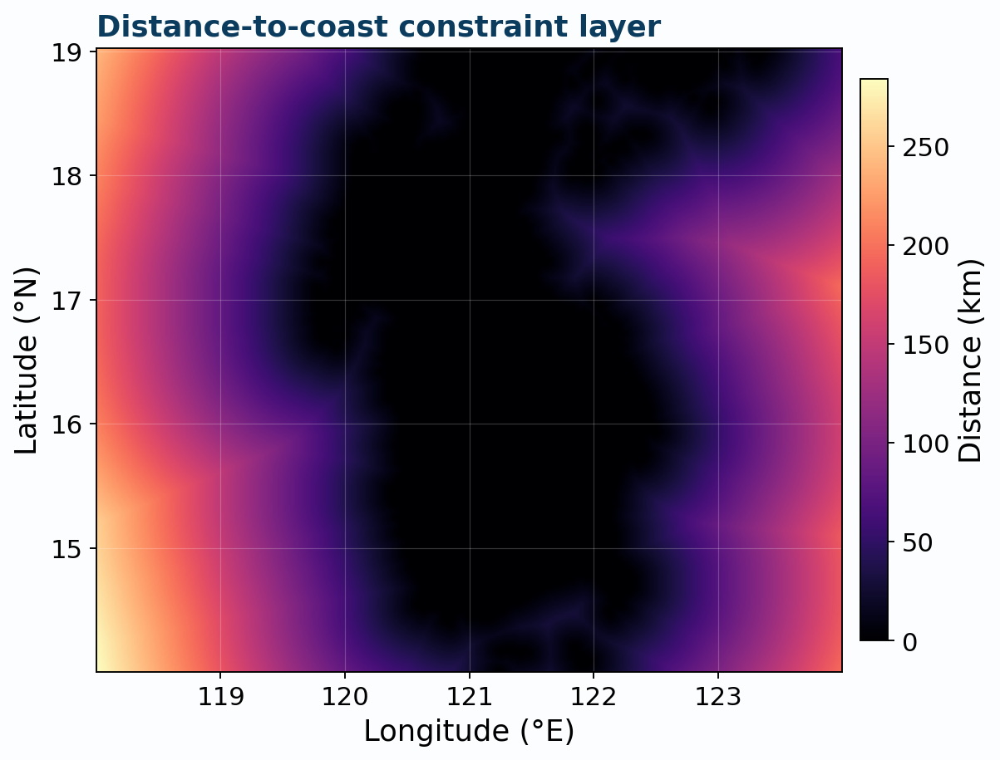
Resource intensity and practical access are separate layers that can be combined during site screening.
The same formulas, the same data, the same code — a stakeholder can re-derive every number.
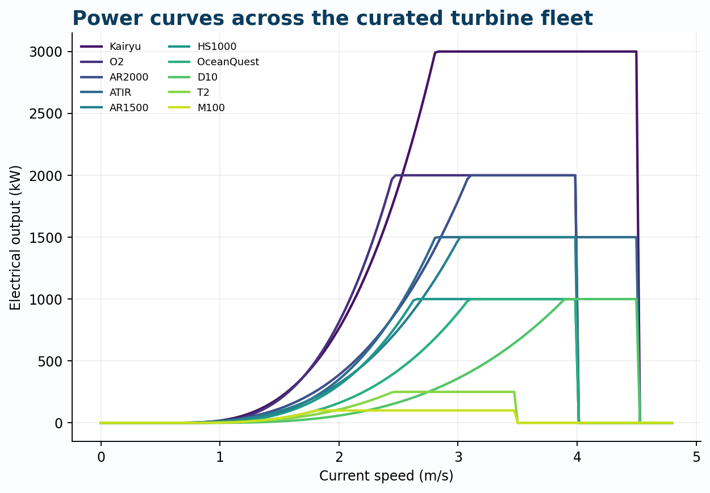
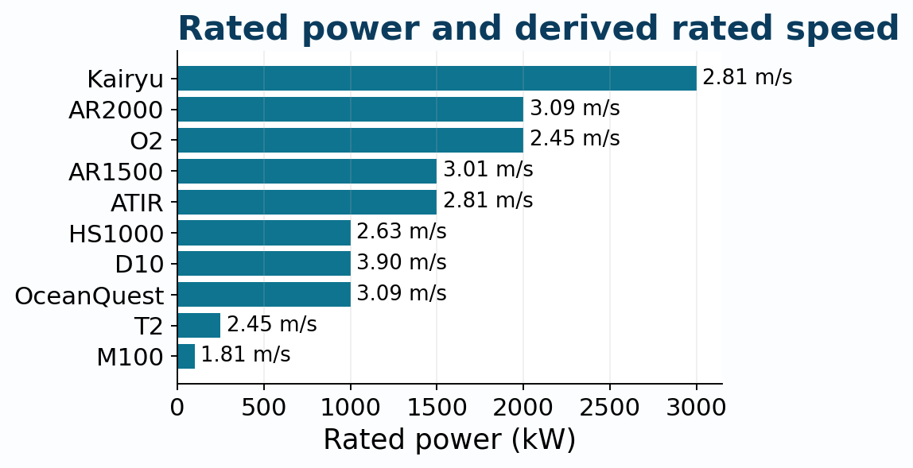
A device is not just a symbol on a map: its cut-in speed, rated speed and power curve change the yield.
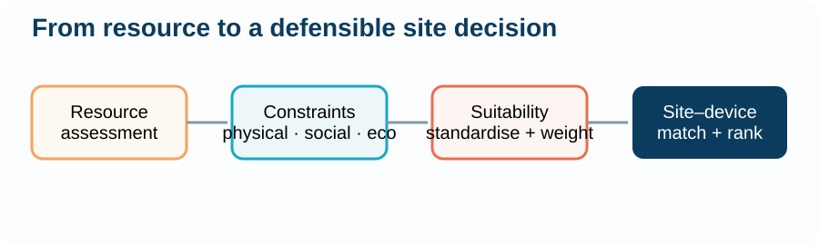
tidal-oss · src/web/app.py turbine endpoints
The decision layer
Marine spatial planning: putting the resource into a plan
What is marine spatial planning (MSP)?
A public, data-driven process that allocates the use of ocean space — balancing energy, shipping, fishing, conservation and communities over time.
From a resource map to a site decision
A hotspot map shows where the energy is. MSP adds the other half of the question: where should we put it? — overlaying constraints, uses and values on the same sea.
Why MSP matters for ocean renewable energy
De-risks investment — transparent, repeatable siting evidence before capital is committed. Resolves conflicts early — shipping lanes, fishing grounds, protected areas and defence zones are made visible, not discovered later. Accelerates licensing — regulators review the same open evidence a developer used. Unlocks co-existence — energy arrays alongside aquaculture, transport corridors and ecosystems.
The planning chain this platform supports: resource → constraints → suitability → investment
RESOURCE→CONSTRAINTS→SUITABILITY→INVESTMENT
Shared evidenceone open dataset for all actors
Fewer conflictsuses mapped before they collide
Auditabledecisions traceable to data & code
The tool behind the plan
Basic system architecture of the MSP tool
Client tier · the browser
MapLibre GL JS renders the interactive map with layered overlays; Chart.js draws the click-to-query tidal curves. No desktop licence, no special software.
API tier · Flask REST service
A thin server exposes the evidence as endpoints: COG raster tiles, point queries, polygon area stats, filtered resource screening and turbine performance.
Data tier · open model outputs
The screening model writes interoperable files the API reads directly: tidal_power_density.tif COG · hotspots.geojson · results.nc.
Three tiers: a browser client, a Flask API, and open model outputs underneath.
model outputs→Flask API→MapLibre GL JS→decision
Phase 3
Visualization & global democratization
Interactive, browser-based layers anyone can use
Cloud-Optimised GeoTIFFs, served as tiles
Colormapped raster tiles stream straight from the COG — no server-side raster stack required.
No high-end hardware, no desktop licence — stakeholders, agencies and the public see the same evidence.
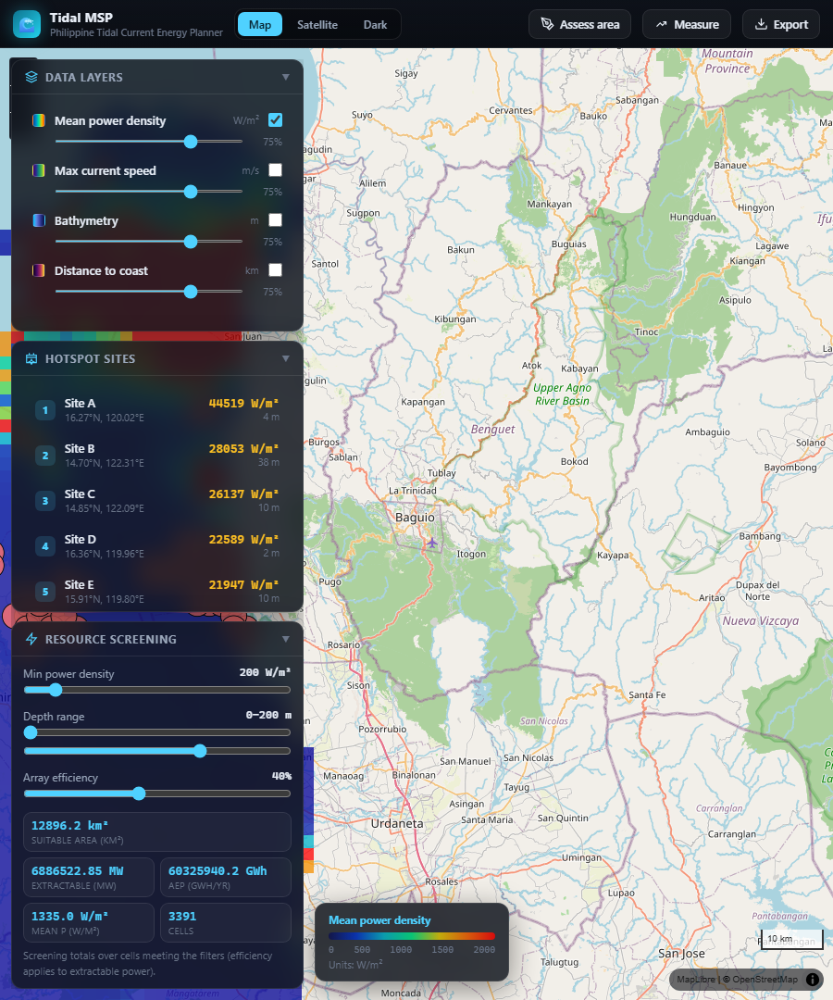
The live MapLibre GL JS MSP tool: interactive power-density layer over the Philippine seas.
tidal-oss · src/web/ (Flask + MapLibre GL JS)
The whole picture
One platform, end-to-end FOSS4G
MIT licenceCI: ruff · mypy · pytestvalidation: seiche · M2 channel · mass conservation
Why this matters
Transparency & reproducibility as engineering policy
Open licence
MIT-licensed code — every formula, solver and API endpoint is readable and reusable.
Open data
GEBCO, GADM, OSM and global tidal databases — citable, downloadable, re-derivable.
Automated verification
Lint, type-check and tests in CI: physical validation (seiche period, M2 channel phase, mass conservation) runs on every change.
No black boxes — by construction
A regulator can answer three questions that matter most: Where?Why there?How do I check?
Where?mapped resource and constraints
Why there?explicit criteria and weights
How to check?open data, code and tests
"Open geospatial frameworks empower organizations of all sizes to contribute to a sustainable future without being tethered to restrictive software licensing."
— session abstract
Honesty about the gaps
Current limits & the road ahead
Screening resolution
The coarse ~2 km model finds hotspots; it cannot resolve turbine-scale flow.
Static forcing
Harmonics are reconstructed offline — not yet live forecasts.
Physical criteria only
Economic screening (depth filters, distance-to-grid) is still to come.
1 · TELEMAC-2D refinement
High-resolution finite-element modelling of the top hotspots, driven by screening results.
2 · Real-time tidal forecasting
Live boundary feeds for operational, day-ahead resource prediction.
3 · Economic & multi-criteria modules
Depth, grid distance and socio-environmental constraints — completing the MCDA promise of the PhilSHORE framework.
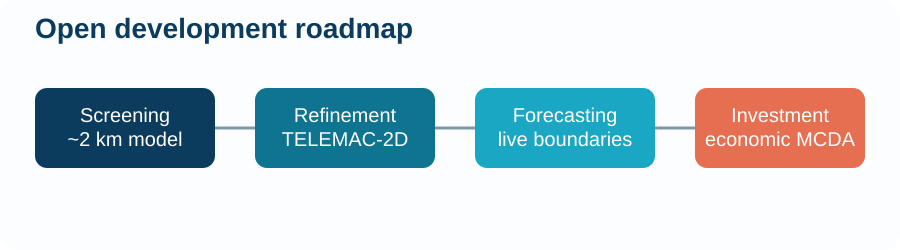
The takeaway
Open geospatial software is the enabling layer for ocean renewable energy
Model
Reproducible spatial analysis on open data
Decide
Standardised physics as automated decision support